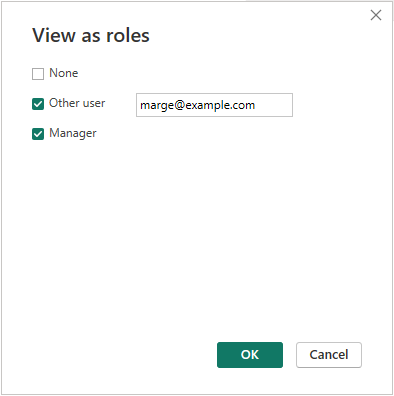

Row-Level Security
What is Row-Level Security (RLS)
Row-Level Security (RLS) is a way to control access to data in a database at a row granularity. This allows users to only have access to the data that they should be authorized to see.
For loan origination data, RLS helps us ensure that users only have access to the same loans they would have access to the loan origination system. An example of this is to provide managers with access to specific cost centers in reports so that they only can see loan information for their region, area, or branch only. In the example below we will walk through the steps of create a role for the manager to cost center scenario. Although we are only working through the one scenario, it could be expand on to make reports that are filtered down to originators or production team level.
Important Concepts
Before we dig into the how to setup and use RLS its important to understand some concepts when looking at adding it to your system:
- How data is refreshed in your system.
- If you are using DirectQuery as your data source there are a few more things that you will need to consider verses importing your data. There are few Microsoft knowledge base articles that cover this, one being the main RLS by Microsoft. All templates from this site use import and can have RLS added to if needed.
- Multiple Datasets or Reports.
- Depending on how you wish to have your data setup and users accessing that data you may end up with multiple datasets or reports that display the same information but one with RLS and another that does not. Example of this happening is if you have an executive team that needs to see all loan data in the system vs a group of managers that only need to see the subset of cost centers they manage.
- How will data be access.
- Users can access data via the Power BI Desktop or the Power BI Service. We will be using the USERPRINCIPALNAME() DAX function to identify a user and apply the correct role for them. If the user is connecting via the Power BI Web Service then you may need to consider what level of access that users has to the workspace that the data/report is stored in, please see this Microsoft KBA on using RLS with workspaces.
Setting Up RLS
For the below examples we are going to reference the following tables:
LOS Data Table
Manager Table
Identifying Users
To enable us to know what data a user should have access to via RLS we need to identify the user that is accessing the report. Luckily Power BI's DAX has a built in function that helps us with this, the USERPRINCIPALNAME() function will return a users information in the user@example.com format. We can then use that to build a access list or apply it to a set of a data to restrict users based on their User Principal Name, you can see this in our Managers data in the EMAIL column.
Note
Please note that there is also a USERNAME() DAX function that will return the User Principal Name when published to the Power BI Service, but when used in the Power BI Desktop version the USERNAME() returns the user information in the DOMAIN\User format where as the USERPRINCIPALNAME() will also return the user@example.com format making a little more consistent between versions.
Tip
You can create a report with a blank dataset that has a set of measures, one set to USERNAME() and the other set to USERPRINCIPALNAME(). Pulling these measures out into a card visual can help see what identity you are working with and act as a troubleshooting source later when you publish the report to the Power BI Web Service.
Identifying Data
When applying RLS we will need to setup a filter to ensure that the user only has access to data that they are suppose to. This means the data has to have some way to group or individual identify what data a user should see. Using the USERPRINCIPALNAME() we would need a email address that is tied to the user for each row they would be given access to. Keep in mind that the email must match what is returned by the USERPRINCIPALNAME() function. In the examples below we will be using cost center to create a group that users should have access to and then use Power BI's relationships to apply the security role. In the above data set we will be building relationships off the ORGID column.
Setting Up RLS Role
To setup a Role that will be used for RLS first click the Manage roles button on the Model ribbon. The Model ribbon can be found while in the Report View or on the Home ribbon while in the Data or Model view. The button looks like this:
Click the Mange roles button will open the Manage roles box:
From here the Create button is used to create a role and then write a DAX expression that is applied to the table we want to apply RLS to. Below is a Role called Manager, that is applied to the Managers table with the a DAX statement that compares the EMAIL column in the Managers table to the USERPRINCIPALNAME() to know which roles should be accessible to the user..
Clicking the Save button will save the role. Now when a user that is assigned to this role uses the dataset, the Managers table will apply RLS and only give access to those rows where the User Principal Name equals the email found in the EMAIL column.
We now need to apply the same RLS not only to the Managers table but have it also flow over to the LOS Data table. Next we look at two different way to accomplish this.
Setting up Many-To-Many relationship
To create a Many-To-Many relationship go to the Model view in Power BI Desktop and drag the key column from one table to the table you wish to create the relationship with. In our example we will be creating a relationship on the ORGID columns. When we do this we will get a Create relationship pop-up confirming that we want to use the ORGID columns.
There are a couple of things to note on this popup:
- Warning about the Many-To-Many cardinality being used, make sure to take a peek at the learn more link provided and understand what this could mean for you environment. If Many-To-Many does not work check out the next example using a bridge table instead.
- Under the Cross filter direction, we want to make sure to check the Apply security filter in both dicrection checkbox so that the Role applied to the Managers table will filter to the LOS Data table through the relationship.
Once you click OK the model view will be updated like below showing the relationship line between the two tables:
With this in place when a user accesses the dataset, the Manager role filters the Managers table down to the cost centers they have access to and that in turn (because of the Apply security filter checkbox) flows down to the LOS Data, making sure that the user only sees loan data for the cost centers they have been allowed to.
Setting up RLS using a Bridge table
An alternative to using a Many-To-Many relationship, is to build a bridge table that contains the unique values of your key fields and then connecting the tables through this new table. In our example we would create a bridge table that contains the ORGID only, using the following DAX statement:
ORGID Only = CALCULATETABLE(DISTINCT('LOS Data'[ORGID]), NOT(ISBLANK('LOS Data'[ORGID])))
This would create a table called ORGID ONLY with all the unique (non-blank) ORGIDS from the LOS Data table:
To create the relationships between the tables, we drag the ORGID column from the ORGID Only table over top the ORGID column in the Managers table and then drag the ORGID column from the ORGID Only table over the ORGID column in the LOS Data table. This will result in a model that looks like the below with a set One-To-Many relationships going from the bridge table to the Managers and LOS Data tables:
To apply the RLS role to a relationship we need double click on the line that goes between the Managers table the ORGID Only table to get the Edit Relationship box to pop-up. We need to change the Cross filter direction dropdown to Both and check the Apply security filter in both directions check box:
With the RLS role and relationship with security check box checked setup, the filter applied from the Manager role will filter down from the Managers table to the ORGID Only table and then finally to the LOS Data table, making so that users only see the loan data for the cost centers they have been allowed to.
Assigning users - Power BI Web Service
Once Row-Level Security has been configured using the Desktop application the report can be published to the Power BI Web Service and the security permissions setup on the dataset. To do this publish the report to a workspace then navigate to the dataset for that report. Hovering your mouse over the dataset will provide additional options to the right of the dataset name. Click on the three dots (...) will pop-up an options menu with the Security option:
Selecting the Security options will open the Row-Level Security page, users can be added to the Role via user email address or by a user group that the user belongs to.
Using our example from above if we were to add Mike, Mary, and Marge's emails to this Role, when they view this report in the Power BI Web Service they would only be able to see those cost centers that they have been assigned to through the Manager Table.
Troubleshooting
Power BI Desktop
It can be handy to see what a user would see when the Role they are assigned to is in use. To do this in Power BI Desktop go to the Modeling Ribbon in your report that has RLS roles setup and click the View as option in the Security section:
This will open the View as roles page allowing you to select the role you are wanting to test along with checking the Other user option and typing the email or domain/username of the user you would like to test as:

Power BI Web Service
In the Power BI Web Service you can test what a user sees by going to Row-Level Security page (were we assign users to the role), and hover over the Role name on the left and click the three docs (...) that show up to the right of the Role name. This will give an option of Test as role. Click this will open the report tied to the dataset and give you an option at the top to change who you are viewing the report as by change the Now view as: dropdown and providing a email address:
Other Users
The above walked through an example of using Row-Level Security through a relationship. If your data happens to contain the email that matches the user principal name in a column then you don't need to use a relationship and can assign the role directly to your data table. This can be handy if you want to give production or operation user access to a report but only want them to have access to the loans they have been assigned to. Keep in mind though that this will only work if the column in your data table that contains the email matches the user principal name when the user access the Power BI Web Service.